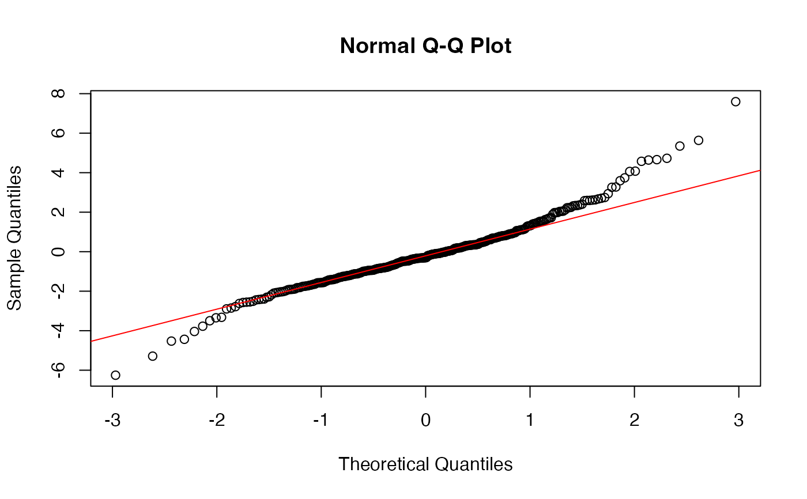
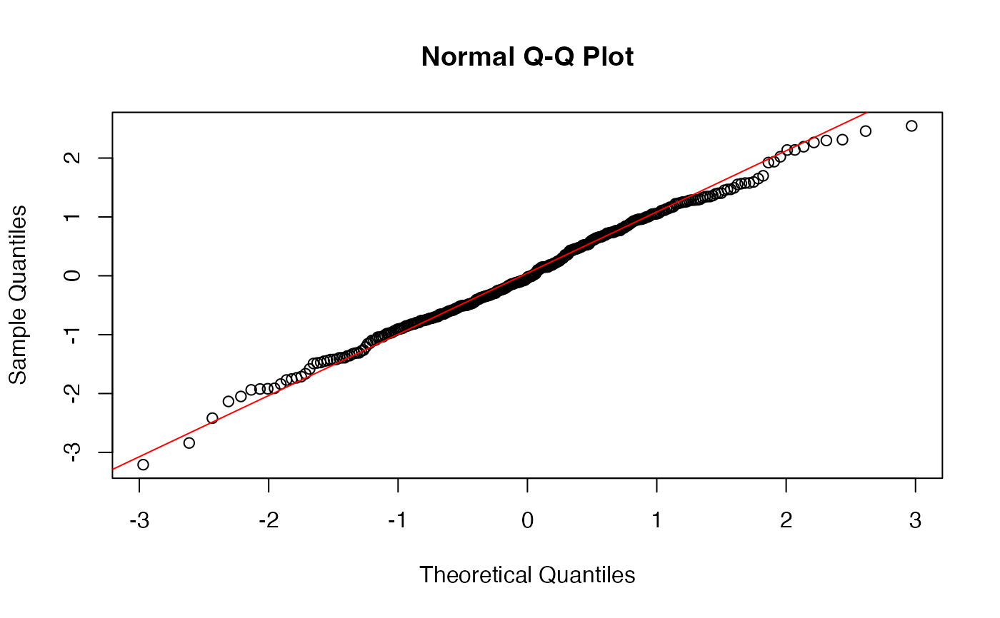
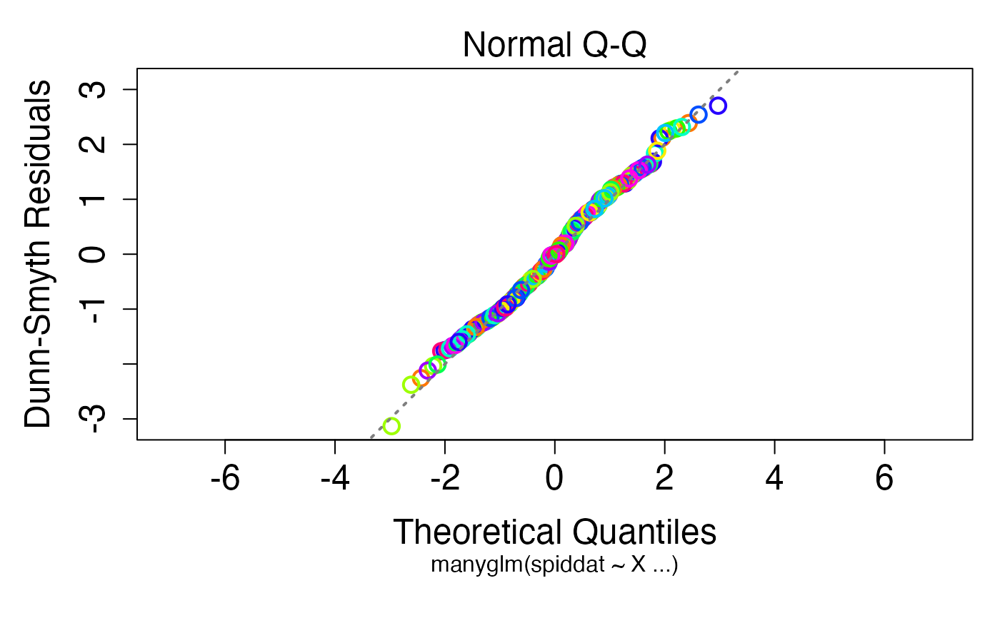

Residuals for MANYGLM, MANYANY, GLM1PATH Fits
residuals.manyglm.RdObtains Dunn-Smyth residuals from a fitted manyglm, manyany or glm1path object.
Arguments
- object
a fitted object of class inheriting from
"manyglm".- ...
further arguments passed to or from other methods.
Details
residuals.manyglm computes Randomised Quantile or ``Dunn-Smyth" residuals (Dunn & Smyth 1996) for a manyglm object. If the fitted model is correct then Dunn-Smyth residuals are standard normal in distribution.
Similar functions have been written to compute Dunn-Smyth residuals from manyany and glm1path objects.
Note that for discrete data, Dunn-Smyth residuals involve random number generation, and will not return identical results on replicate runs. Hence it is worth calling this function multiple times to get a sense for whether your interpretation of results holds up under replication.
References
Dunn, P.K., & Smyth, G.K. (1996). Randomized quantile residuals. Journal of Computational and Graphical Statistics 5, 236-244.
Examples
data(spider)
spiddat <- mvabund(spider$abund)
X <- as.matrix(spider$x)
## obtain residuals for Poisson regression of the spider data, and doing a qqplot:
glmP.spid <- manyglm(spiddat~X, family="poisson")
resP <- residuals(glmP.spid)
qqnorm(resP)
qqline(resP,col="red")

#clear departure from normality.
## try again using negative binomial regression:
glmNB.spid <- manyglm(spiddat~X, family="negative.binomial")
resNB <- residuals(glmNB.spid)
qqnorm(resNB)
qqline(resNB,col="red")

#that looks a lot more promising.
#note that you could construct a similar plot directly from the manyglm object using
plot(glmNB.spid, which=2)
